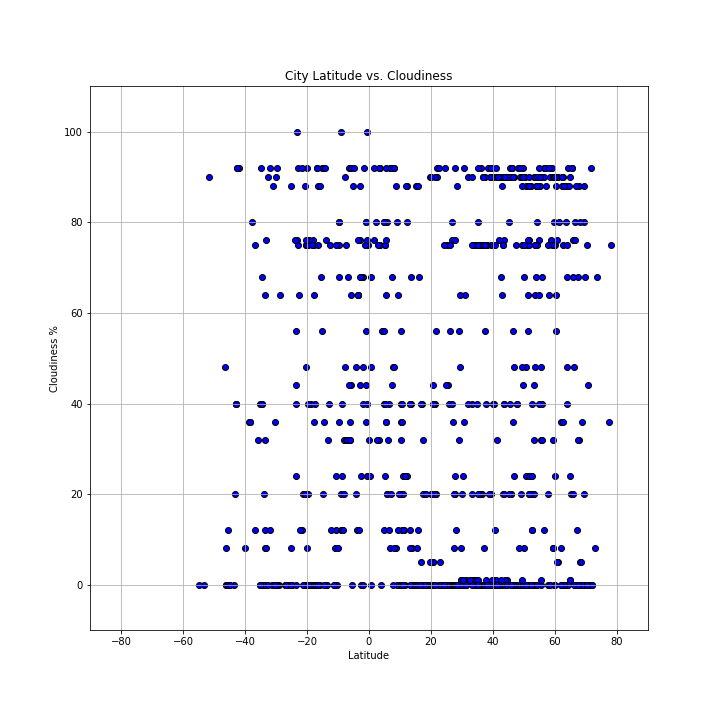

Latitude vs. Cloudiness
 The cloudiness graph seems to show the least discernable trend. It shows relatively level lines distributed throughout the graph in both the northern and southern hemispheres. There do appear to be less cloudy conditions north of the equator, but this could be due to the fact that there appears to be just more cities that are in the data north of the equator. In general, it looks like it would appear that location based on latitude, is not able to determine or does not correlate to how cloudy a certain may be.